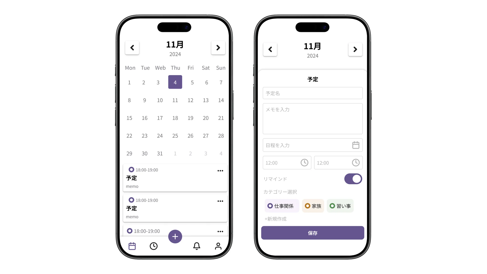

概要
ユーザーが直感的に予定を確認・登録できることを目的に設計したカレンダーアプリのUIデザインです。
日々のスケジュール管理において、情報の見やすさと操作のしやすさを両立することを重視し、「迷わず使える体験」を軸に設計しています。
課題
一般的なカレンダーアプリにおいて、以下のような課題があると考えました。
- 予定の確認と登録の操作が分断されている
- 情報量が多く、視認性が低下しやすい
- 入力項目が多く、登録時にストレスを感じやすい
これらを解決し、「迷わず使えるシンプルな体験」を目指しました。
ターゲット
- 日常的にスケジュール管理を行うユーザー
- シンプルで直感的な操作を求めるユーザー
ユーザーフロー
日付選択 → 予定確認 → 新規作成 → 入力 → 保存
予定の確認から登録までをスムーズに行えるよう、導線をシンプルに設計しています。
画面設計

カレンダー画面
月間カレンダーを中心に、選択日と予定を視覚的に分かりやすく配置しています。
予定はカード形式で表示し、内容を一目で把握できるようにしました。
また、主要アクションである「新規作成」を画面下部に配置し、片手操作でも押しやすい設計としています。
予定登録画面
入力項目は「予定名 → メモ → 日付 → 時間 → カテゴリ」の順に配置し、ユーザーの思考の流れに沿った構成としました。
リマインド機能やカテゴリ選択は視覚的に分かりやすいUIとし、設定状況が一目で把握できるようにしています。
また、保存ボタンを画面下部に固定することで、入力後の操作をスムーズに行えるよう工夫しました。
工夫したポイント
- 情報量を抑え、視認性を高めたシンプルなレイアウト
- ユーザーの思考順に沿った入力フロー設計
- 主要アクションを親指で操作しやすい位置に配置
- 状態（選択・ON/OFF）が一目で分かるUI設計
今後のUI改善案
- カレンダー上での予定の可視化強化（件数表示や色分け）
- 予定の重要度に応じた表示の強弱の追加
- 操作フィードバック（登録完了時の通知など）の強化
カレンダー上での予定の可視性については改善の余地があり、件数表示や色分けによる視認性向上が必要と考えています。
UX改善案
ユーザーの利用シーンや入力負荷に着目し、以下のUX改善を検討しました。
① 利用シーンの拡張（家族共有）
個人の予定管理だけでなく、家族間でのスケジュール共有ニーズがあると考え、複数人での利用を想定した機能拡張を検討しました。
② 操作負荷の軽減（写真登録）
予定登録時の入力負荷が高いことを課題と捉え、より直感的に登録できる方法として、画像からの情報抽出による予定登録機能を検討しました。
この作品のポイント
シンプルなUIの中で、ユーザーが迷わず操作できる導線設計と情報整理を重視しました。
日常的に使うアプリだからこそ、認知負荷を下げた使いやすい体験の実現を目指しています。